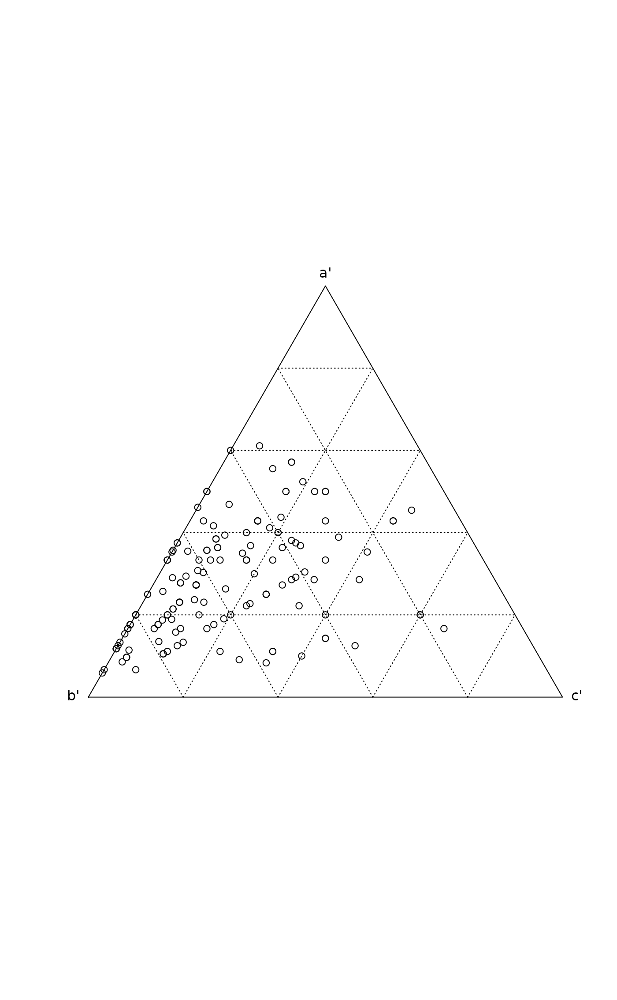

Indices of beta Diversity
betadiver.RdThe function estimates any of the 24 indices of beta diversity reviewed by Koleff et al. (2003). Alternatively, it finds the co-occurrence frequencies for triangular plots (Koleff et al. 2003).
Arguments
- x
Community data matrix, or the
betadiverresult forplotandscoresfunctions.- method
The index of beta diversity as defined in Koleff et al. (2003), Table 1. You can use either the subscript of \(\beta\) or the number of the index. See argument
helpbelow.- order
Order sites by increasing number of species. This will influence the configuration in the triangular plot and non-symmetric indices.
- help
Show the numbers, subscript names and the defining equations of the indices and exit.
- triangular
Return scores suitable for triangular plotting of proportions. If
FALSE, returns a 3-column matrix of raw counts.- ...
Other arguments to functions.
Details
The most commonly used index of beta diversity is
\(\beta_w = S/\alpha - 1\), where \(S\) is the total number of
species, and \(\alpha\) is the average number of species per site
(Whittaker 1960). A drawback of this model is that \(S\) increases
with sample size, but the expectation of \(\alpha\) remains
constant, and so the beta diversity increases with sample size. A
solution to this problem is to study the beta diversity of pairs of
sites (Marion et al. 2017). If we denote the number of species
shared between two sites as \(a\) and the numbers of unique
species (not shared) as \(b\) and \(c\), then \(S = a + b +
c\) and \(\alpha = (2 a + b + c)/2\) so that \(\beta_w =
(b+c)/(2 a + b + c)\). This is the Sørensen
dissimilarity as defined in vegan function
vegdist with argument binary = TRUE. Many other
indices are dissimilarity indices as well.
Function betadiver finds all indices reviewed by Koleff et
al. (2003). All these indices could be found with function
designdist, but the current function provides a
conventional shortcut. The function only finds the indices. The proper
analysis must be done with functions such as betadisper,
adonis2 or mantel.
The indices are directly taken from Table 1 of Koleff et al. (2003),
and they can be selected either by the index number or the subscript
name used by Koleff et al. The numbers, names and defining equations
can be seen using betadiver(help = TRUE). In all cases where
there are two alternative forms, the one with the term \(-1\) is
used. There are several duplicate indices, and the number of distinct
alternatives is much lower than 24 formally provided. The formulations
used in functions differ occasionally from those in Koleff et
al. (2003), but they are still mathematically equivalent. With
method = NA, no index is calculated, but instead an object of
class betadiver is returned. This is a list of elements
a, b and c. Function plot can be used to
display the proportions of these elements in triangular plot as
suggested by Koleff et al. (2003), and scores extracts the
triangular coordinates or the raw scores. Function plot returns
invisibly the triangular coordinates as an "ordiplot"
object.
Value
With method = NA, the function returns an object of class
"betadisper" with elements a, b, and c. If
method is specified, the function returns a "dist"
object which can be used in any function analysing
dissimilarities. For beta diversity, particularly useful functions are
betadisper to study the betadiversity in groups,
adonis2 for any model, and mantel to
compare beta diversities to other dissimilarities or distances
(including geographical distances). Although betadiver returns
a "dist" object, some indices are similarities and cannot be
used as such in place of dissimilarities, but that is a user
error. Functions 10 ("j"), 11 ("sor") and 21
("rlb") are similarity indices. Function sets argument
"maxdist" similarly as vegdist, using NA
when there is no fixed upper limit, and 0 for similarities.
References
Baselga, A. (2010) Partitioning the turnover and nestedness components of beta diversity. Global Ecology and Biogeography 19, 134–143.
Koleff, P., Gaston, K.J. and Lennon, J.J. (2003) Measuring beta diversity for presence-absence data. Journal of Animal Ecology 72, 367–382.
Marion, Z.H., Fordyce, J.A. and Fitzpatrick, B.M. (2017) Pairwise beta diversity resolves an underappreciated source of confusion in calculating species turnover. Ecology 98, 933–939.
Whittaker, R.H. (1960) Vegetation of Siskiyou mountains, Oregon and California. Ecological Monographs 30, 279–338.
See also
designdist can be used to implement all these
functions, and also allows using notation with alpha and
gamma diversities. vegdist has some canned
alternatives. Functions betadisper,
adonis2 and mantel can be used for
analysing beta diversity objects. The returned dissimilarities can
be used in any distance-based methods, such as
metaMDS, capscale and
dbrda. Functions nestedbetasor and
nestedbetajac implement decomposition beta diversity
measures (Sørensen and Jaccard) into turnover and
nestedness components following Baselga (2010).
Examples
## Raw data and plotting
data(sipoo)
m <- betadiver(sipoo)
plot(m)

## The indices
betadiver(help=TRUE)
#> 1 "w" = (b+c)/(2*a+b+c)
#> 2 "-1" = (b+c)/(2*a+b+c)
#> 3 "c" = (b+c)/2
#> 4 "wb" = b+c
#> 5 "r" = 2*b*c/((a+b+c)^2-2*b*c)
#> 6 "I" = log(2*a+b+c) - 2*a*log(2)/(2*a+b+c) - ((a+b)*log(a+b) +
#> (a+c)*log(a+c)) / (2*a+b+c)
#> 7 "e" = exp(log(2*a+b+c) - 2*a*log(2)/(2*a+b+c) - ((a+b)*log(a+b) +
#> (a+c)*log(a+c)) / (2*a+b+c))-1
#> 8 "t" = (b+c)/(2*a+b+c)
#> 9 "me" = (b+c)/(2*a+b+c)
#> 10 "j" = a/(a+b+c)
#> 11 "sor" = 2*a/(2*a+b+c)
#> 12 "m" = (2*a+b+c)*(b+c)/(a+b+c)
#> 13 "-2" = pmin.int(b,c)/(pmax.int(b,c)+a)
#> 14 "co" = (a*c+a*b+2*b*c)/(2*(a+b)*(a+c))
#> 15 "cc" = (b+c)/(a+b+c)
#> 16 "g" = (b+c)/(a+b+c)
#> 17 "-3" = pmin.int(b,c)/(a+b+c)
#> 18 "l" = (b+c)/2
#> 19 "19" = 2*(b*c+1)/(a+b+c)/(a+b+c-1)
#> 20 "hk" = (b+c)/(2*a+b+c)
#> 21 "rlb" = a/(a+c)
#> 22 "sim" = pmin.int(b,c)/(pmin.int(b,c)+a)
#> 23 "gl" = 2*abs(b-c)/(2*a+b+c)
#> 24 "z" = (log(2)-log(2*a+b+c)+log(a+b+c))/log(2)
## The basic Whittaker index
d <- betadiver(sipoo, "w")
## This should be equal to Sorensen index (binary Bray-Curtis in
## vegan)
range(d - vegdist(sipoo, binary=TRUE))
#> [1] 0 0